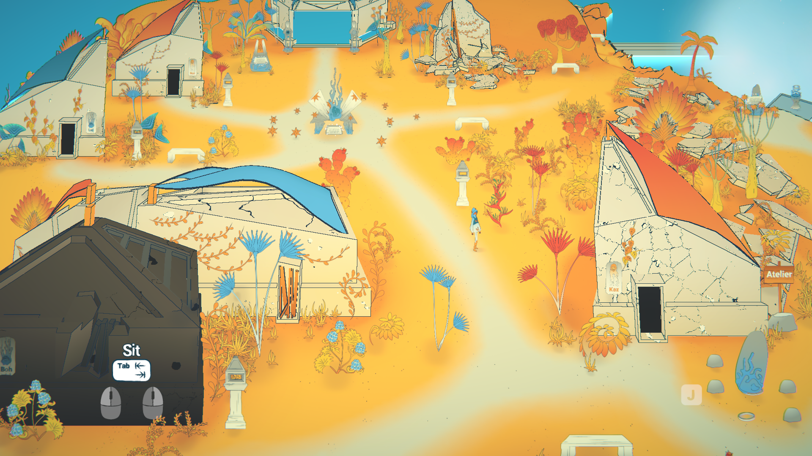
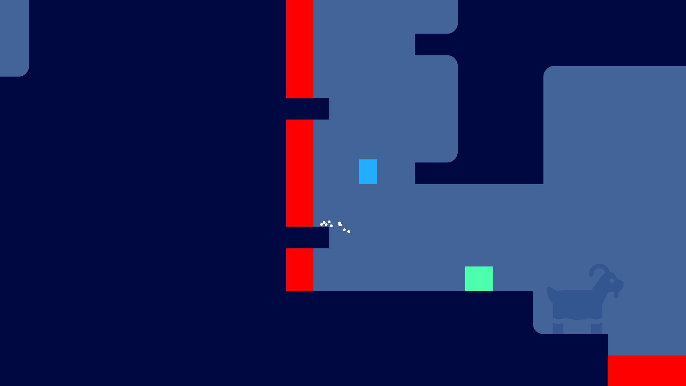
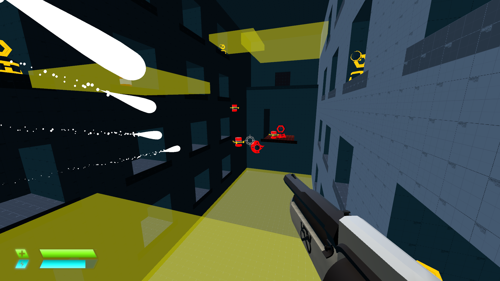
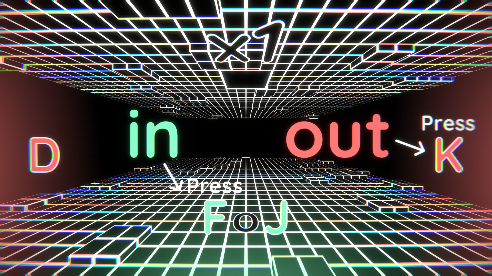
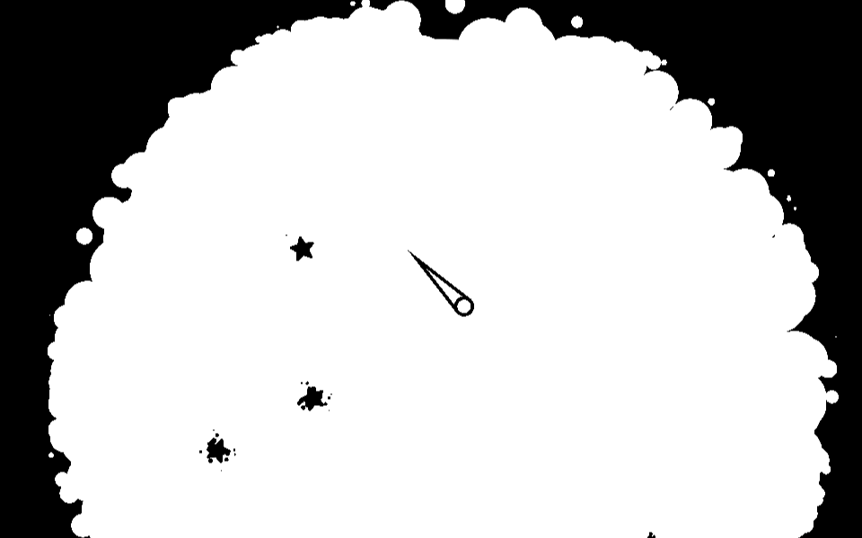
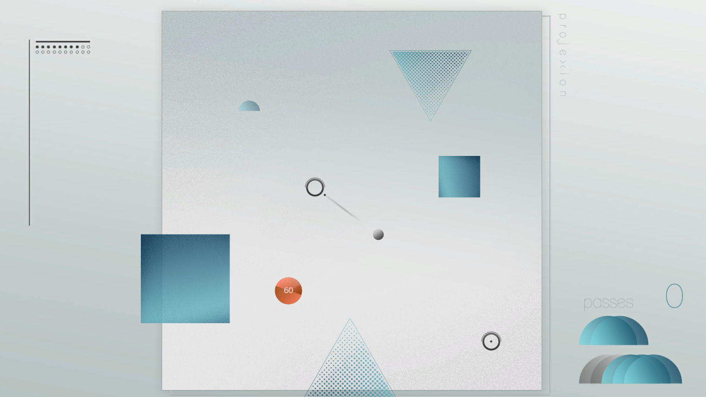
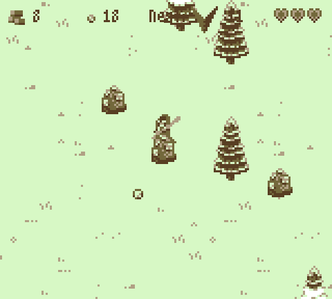

|  |
Archipel (2023)theom.itch.io/archipelArchipel is an exploration game with a focus on narration, meant to be non-violent and accessible. The player is stranded on a mysterious island and tries to solve its mysteries through gathering knowledge about the people that used to live here. Made in Unity by a team of 4 during the final 4 month of the game design DESS at UdeM, I am responsible for the original concept, production, and programming of the whole project. Having received very positive reviews from the public and industry professionals alike, this is my biggest project to date. |
|  |
A Simple Metroidvania (2022)theom.itch.io/a-simple-metroidvaniaA short and sweet exercise in platformer game feel and level design. Solo project made in Unity. |
|  |
FPS prototype (2022)theom.itch.io/fps-prototypeA short first person shooter. Meant as a programming exercice, I took the opportunity to work on FPS game feel. Made in Unity by a team of 3, I am responsible for most of the design and programming. |
|  |
Okabuds (2021)theom.itch.io/okabudsA frenetic scoring game, challenging your hand coordination. Solo project made in Unity, I focused on the game feel and the sound design with Wwise. |
|  |
Zone (2020)theom.itch.io/zoneA video game essay on the comfort zone. Solo project in Unity, sponsored by Galerie Galerie in the context of the online exhibition "Ce jeu est romantique, dangereux et intense." |
|  |
projexion (2018)theom.itch.io/projexionA coop combo game against bosses. A three-people game jam project, co-designed and programmed by me in Unity. |
|  |
Nuclear Winter (2016)theom.itch.io/nuclearwinterA survival scoring game. A game jam project made by a team of 4, I am responsible for the design and programming. Made in Unity. |